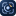
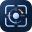

LUMINOUS LAB / SMALL ICONS
작은 크기에서도 또렷하게.
32·24·16px 전용 축소형. SVG 표시 크기와 벡터 확대를 비교합니다. 아래 탭 전용 PNG 영역에서는 실제 출력 픽셀을 확인할 수 있습니다.
남색 바탕 · 청백색과 금빛 신호
32 px
눈금과 궤도의 선명도

기본형의 프레임과 눈금 길이, 더 또렷한 궤도와 신호점. 네 방향 눈금이 관측 대상을 짚습니다.
32px 축소형 SVG 열기 ↗24 px
짧은 눈금과 또렷한 신호점
짧은 네 방향 눈금과 선명한 신호점. 호와 점의 크기 차이로 신호를 강조합니다.
24px 축소형 SVG 열기 ↗16 px
눈금 없이 열린 궤도와 신호점
눈금과 주변 발광 없이 열린 궤도와 중심 구체를 표현합니다. 신호점은 색 또는 명암 대비로 강조합니다.
16px 축소형 SVG 열기 ↗파비콘 · 보정 SVG와 실제 PNG
아래 작은 비교는 모두 16 CSS px로 표시합니다. SVG와 PNG는 같은 보정 형태를 사용하며 브라우저가 표시 위치에 맞는 파일을 선택합니다. PNG 확대는 저장된 픽셀을 그대로 보여 줍니다.
16px PNG · 작은 비트맵


32px PNG · 작은 비트맵


프레임은 100% 배율에서 1픽셀 두께로 경계를 맞췄습니다. 열린 궤도의 굵기와 명암을 보강하고, 모든 배율의 탭 아이콘에서 눈금·발광을 생략했습니다. 일반 24·32px UI 아이콘과 큰 기본형은 기존 형태를 유지합니다.
 센서 실험실센서 실험실센서 실험실센서 실험실센서 실험실센서 실험실
센서 실험실센서 실험실센서 실험실센서 실험실센서 실험실센서 실험실 센서 실험실센서 실험실
센서 실험실센서 실험실SVG와 16·32·96px PNG를 함께 제공합니다. 파일 크기별로 형태를 바꾸지 않습니다. 위 탭 모양은 콘텐츠 안의 비교 예시이며 실제 브라우저 탭의 선택 결과를 뜻하지 않습니다. 홈 화면용 180·192·512px 아이콘은 눈금이 있는 큰 기본형을 사용합니다.